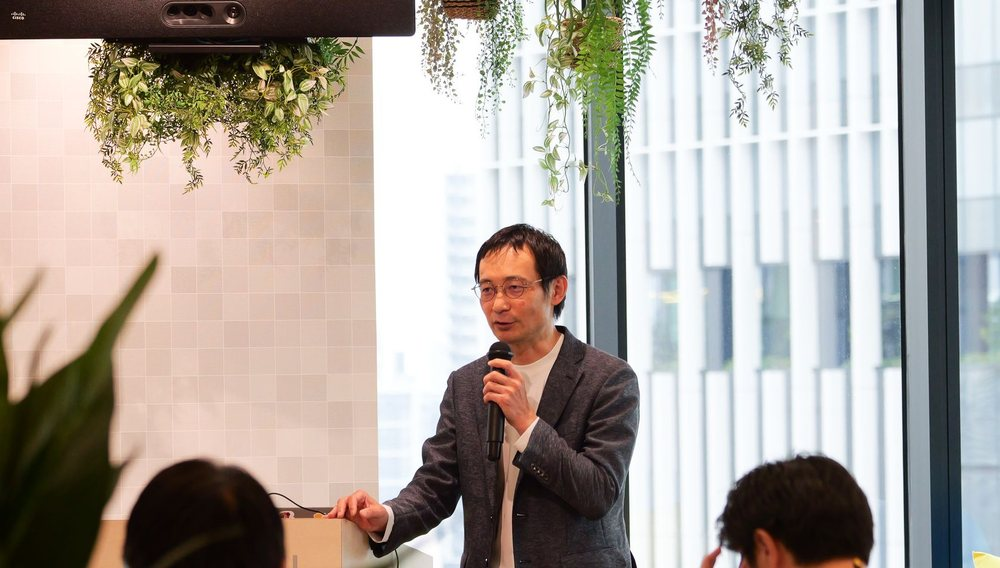
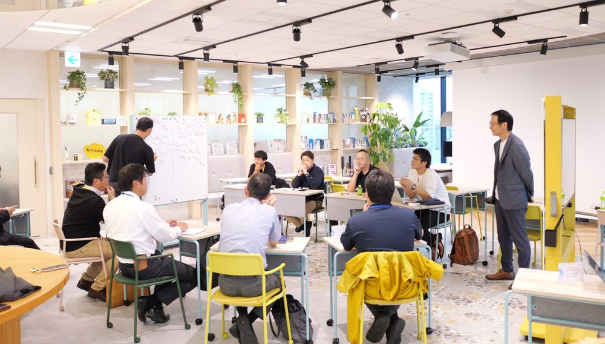
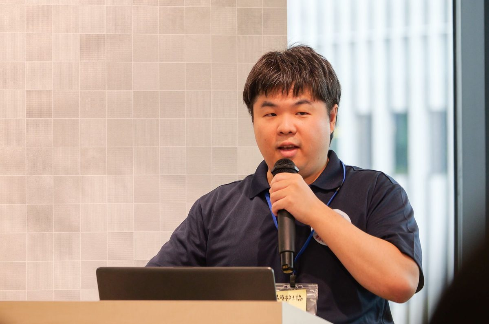
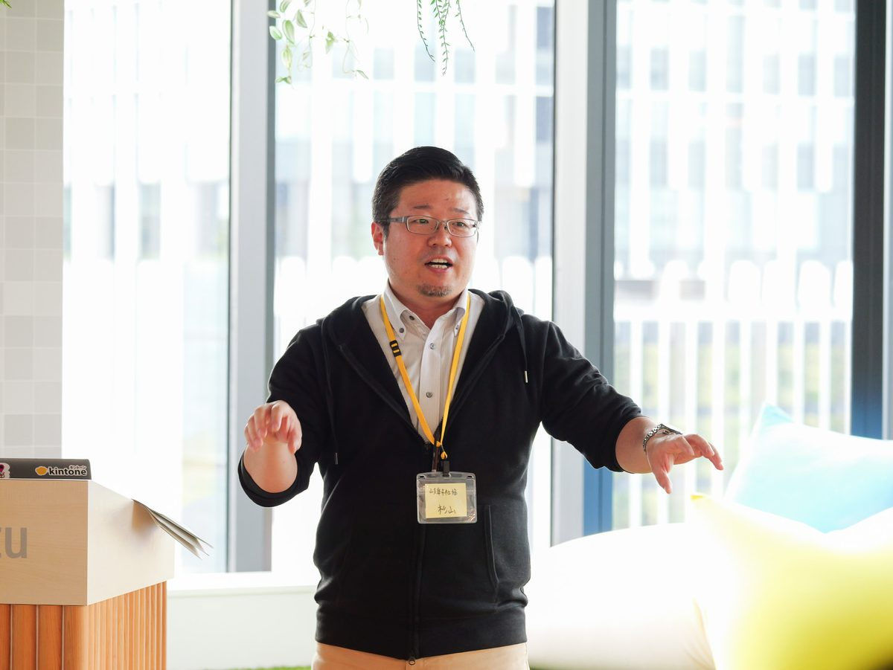
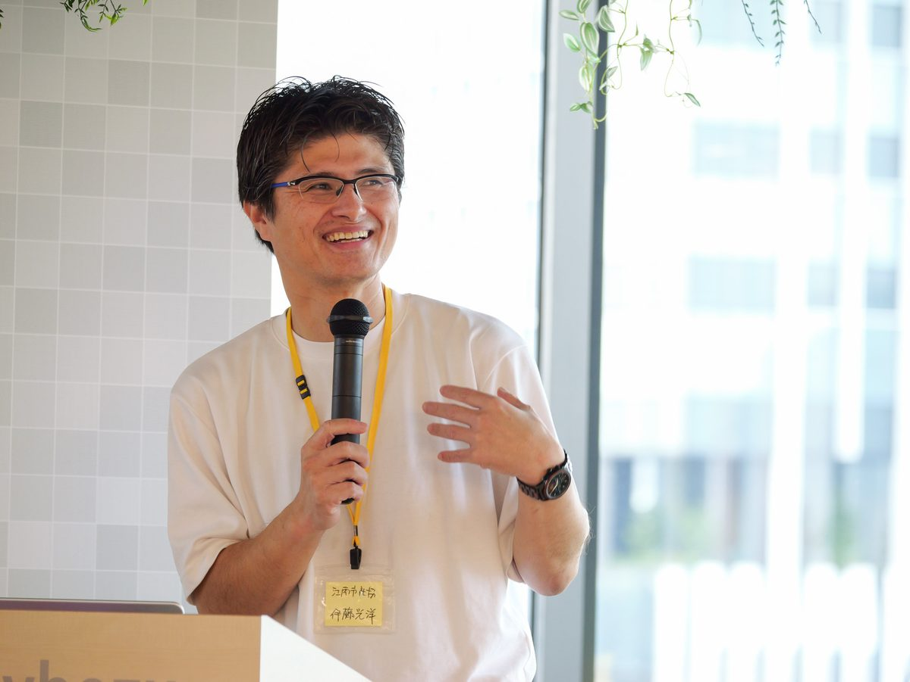
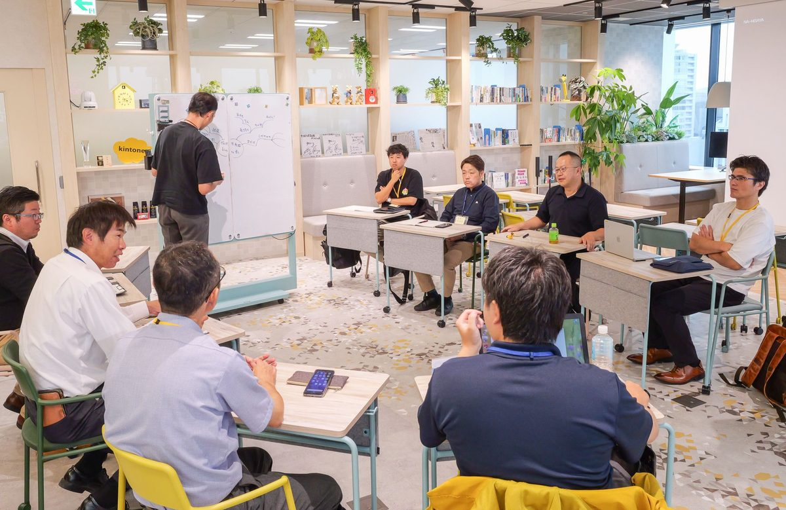
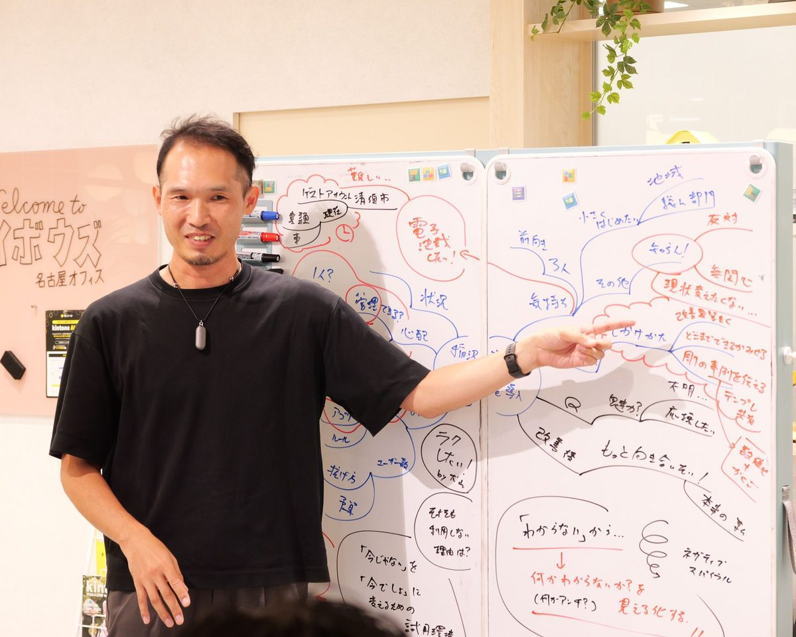

第2回【kintone×社会福祉協議会】
社会福祉協議会職員限定のユーザー交流会を開催しました


2026年10月20日、昨年満員御礼となった「社協限定 kintoneユーザー交流会」を、
サイボウズ名古屋オフィスにて今年も開催しました。
第2回となる今回は、清須市・岐阜市・江南市の社会福祉協議会の皆さまに、kintoneの活用についてお話しいただきました。
最後は、導入を予定されている稲沢市社会福祉協議会様の課題を、参加者の皆さまで考えるグループワークも実施。
導入直前、導入3年、導入5年と利用年数の違う3つの社協が口を揃えて言ったのは、
「kintoneは手段」でした。当日の様子をご紹介します。
当日のプログラム

発表1管理職と元SEが協力して導入準備
清須市社会福祉協議会 河村 様
清須市社会福祉協議会では、1月の本格導入に向け、無料お試し環境を活用してアプリの試作・検証を進めています。
事務局長の鹿山さんと元SEの河村さんが協力し、試行段階ですでに約30個のアプリを構築。当日は実際の画面を使い、利用者台帳と対応履歴の連携、施設・車両の予約管理、役職を組み込んだプロセス管理などが紹介されました。
過去の対応事例をAIで検索する仕組みも検討しており、12ユーザーでの運用開始を予定しています。

発表2業務整理と職員の合意を大切にした改善
岐阜市社会福祉協議会 杉山 様
業務改善の積み重ねから、kintoneの導入・活用につながった経緯が紹介されました。
地域福祉課では、市への報告内容の充実を求められたことをきっかけに、記録項目を整理し、Excelで情報を蓄積。その後、情報の一元管理・共有・活用を進めるため、令和5年にkintoneへ移行しました。
- データ容量 6.9GB を削減
- ファイル数 2,161件・フォルダ数 936件 を削減
- 7人分の記録・報告業務で 350時間超 を削減
報告のために蓄積していた情報を、日常業務で共有・活用できる仕組みへと変えています。
生活相談課では、職員と業務の進め方や個人情報の取り扱いを見直し、合意できた業務から小さく試行。職員の納得と主体性を大切にしながら、改善を進めていることが紹介されました。

発表3活動記録の共有から全職員での活用へ
江南市社会福祉協議会 伊藤 様
江南市社会福祉協議会の伊藤さんからは、分散していた活動記録の共有をきっかけに、活用範囲を広げてきた経緯が紹介されました。
スケジュールや日報を通じて職員の活動、地域課題、支援状況を把握し、次の対応につなげています。令和4年に5ユーザーで導入し、令和8年度には全職員に個人アカウントを付与。出退勤や休暇管理などにも利用が広がっています。
一方で、改善に取り組む時間の確保や、増えたアプリの整理・見直しが課題として挙げられました。


稲沢市社会福祉協議会様の課題をテーマに
最後は、これからkintoneの導入を予定されている稲沢市社会福祉協議会様の課題をテーマに、グループワークを行いました。
参加者の皆さまが、それぞれの経験や視点を持ち寄り、課題にどう取り組めるかを一緒に検討。活発に意見を交わし、発表を聞くだけでなく身近な課題を一緒に考える機会となりました。